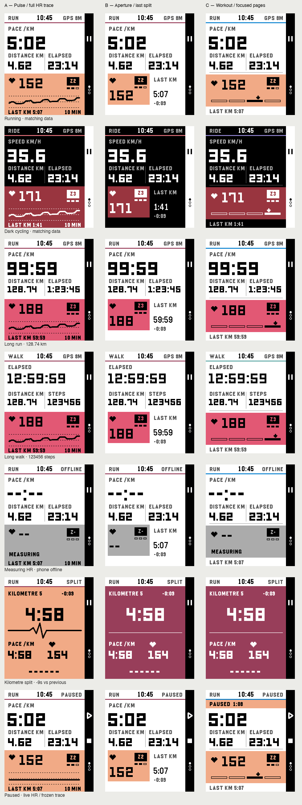

Round 2 · Native 200 × 228 Emery graphics and system fonts, with LCD colour correction. Running puts pace first, with distance and elapsed time below. Cycling leads with speed; walking retains elapsed time and steps. Every option keeps the last completed kilometre result visible. Heart icons and zone badges identify HR without another heading or footer. A keeps Pulse’s full-width effort field and rolling HR trace. B pairs a compact HR tile with the most recent completed split. C borrows the hierarchy and focused pages from PebbleOS Workout’s redesign, with an exact HR marker. Its extra pages use only metrics Pacelet can record; they remain proposals.

Split motion study
The split opens from the effort field. Chrome stays fixed; the values show recorded data. This is a timed sequence of native frames, not measured device frame pacing.